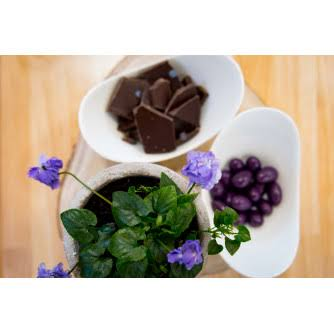

Chocolats
à la Violette


⟹ Chocolaterie & Confiserie ⟸
Dans le sillage de la violette cristallisée, les chocolatiers toulousains ont progressivement décliné la fleur emblématique de leur ville dans l'univers du cacao. L'association n'allait pas de soi : le parfum de la violette est délicat et peut vite être écrasé par un chocolat trop puissant. Il a fallu trouver le bon équilibre entre note florale et amertume du cacao.

Toulouse possède une solide tradition de confiserie. C'est par exemple dans la ville que le pharmacien Léon Lajaunie crée en 1880 ses célèbres pastilles de réglisse, le cachou Lajaunie. Dans ce paysage de confiseurs et de pharmaciens-droguistes, la violette, déjà candie, mise en sirop ou en liqueur, s'impose naturellement comme parfum de bonbons et de douceurs.
Le mariage de la violette et du chocolat se développe au XXe siècle, mais c'est surtout avec la relance de la filière dans les années 1980-1990 qu'il devient une signature locale. La création de l'association Terre de Violettes et de la Fête de la Violette encourage les artisans à imaginer de nouveaux produits autour de la fleur, et les chocolatiers s'en emparent.
Le parfum si particulier de la violette tient à des molécules appelées ionones. Elles ont une propriété curieuse : après quelques instants, elles saturent brièvement les récepteurs olfactifs, si bien que le parfum semble disparaître puis revenir. Cet effet « fugitif » explique pourquoi les chocolatiers dosent l'arôme avec précision, et pourquoi la violette se marie mieux avec une ganache souple qu'avec un chocolat très torréfié.
Plusieurs formes se sont imposées. La ganache à la violette, souvent enrobée de chocolat noir, constitue la base ; le bonbon fondant joue sur un cœur de fondant sucré parfumé ; la tablette associe chocolat noir et éclats de violette cristallisée qui croquent sous la dent. L'éclat de fleur posé sur le dessus est devenu un véritable code visuel, reconnaissable au premier coup d'œil.
Le chocolat noir reste le partenaire le plus classique, son amertume contrastant avec la douceur poudrée de la fleur. Mais le chocolat au lait et le chocolat blanc, plus doux, laissent davantage s'exprimer la violette ; on les trouve souvent colorés de mauve, en écho à la couleur de la fleur.
Aujourd'hui, chaque chocolatier toulousain propose sa propre interprétation, et la recette exacte reste souvent un secret de maison. Présentés en ballotins ou en boîtes mauves, ces chocolats sont devenus, aux côtés de la violette cristallisée, l'un des souvenirs gourmands les plus emportés par les visiteurs de la Ville Rose, avec des pics de vente à Noël, à Pâques et pendant la Fête de la Violette.
Bonbons fondants : un cœur de fondant parfumé à la violette, enrobé de chocolat noir ou au lait.
Tablette violette : chocolat noir de grand cru parsemé d'éclats de violette cristallisée.
Chocolat blanc à la violette : plus doux, il laisse pleinement s'exprimer la note florale, souvent coloré de mauve.
Orangettes revisitées : écorces confites enrobées de chocolat et parfumées à la violette.
Pâte à tartiner et pralinés : créations plus récentes qui associent fruits secs, chocolat et arôme de violette.
Les chocolats à la violette se trouvent dans la plupart des chocolateries toulousaines, chacune avec sa recette.
Les chocolatiers artisanaux du centre de Toulouse qui proposent chacun leur propre ganache à la violette, en ballotins ou à l'unité.
La Maison de la Violette péniche sur le canal du Midi, qui réunit de nombreux produits dérivés de la fleur, dont chocolats et bonbons.
Le marché Victor Hugo où confiseurs et épiceries fines proposent les spécialités violette.
La Fête de la Violette en février, place du Capitole, vitrine annuelle des créations des artisans.